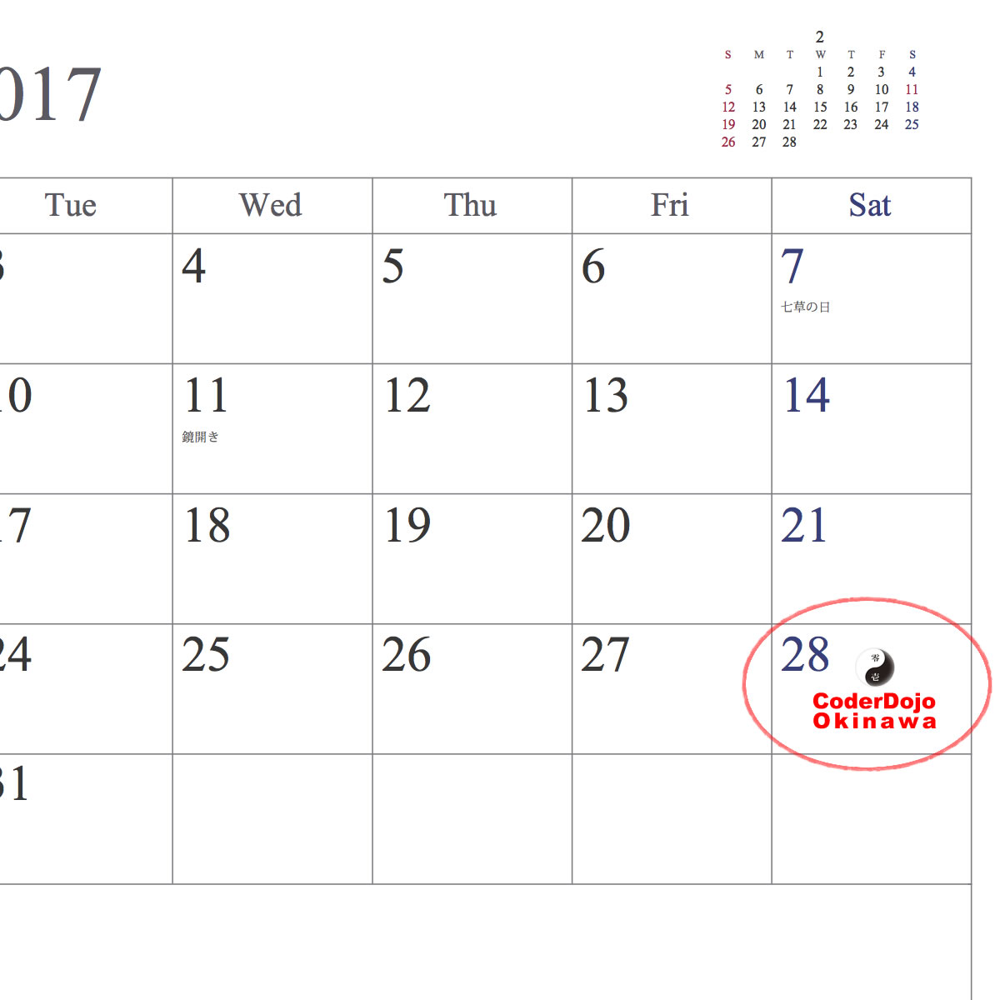

2017/1/8
子ども向けプログラミング道場を開催します。
第一回目は、Scrach（https://scratch.mit.edu/）というツールを使って、簡単（かんたん）なゲームを作ってみます。
- 参加費無料（さんかひむりょう）
- ノートPCの貸出あり（パソコンのかしだしあり）
- 参加可能な子どもたちの人数：15名
- スペースの都合上、大人の方は、立ち見か道場の終了まで退室いただくことがあります。ご了承ください。
- 対象（たいしょう）は小学生以上、中学生以下（しょうがくせいからちゅうがくせいまで。）
- 特別な準備は不要です。（とくべつにじゅんびするもものはありません。）
- パソコンを使って、プログラミングを体験してみたい、ゲームを作ってみたいという子どもたち、ぜひ参加してください！
- パソコンをつかって、プログラムをしてみたい、ゲームをつくってみたいという子どもたち、あつまってください！ ^^/
